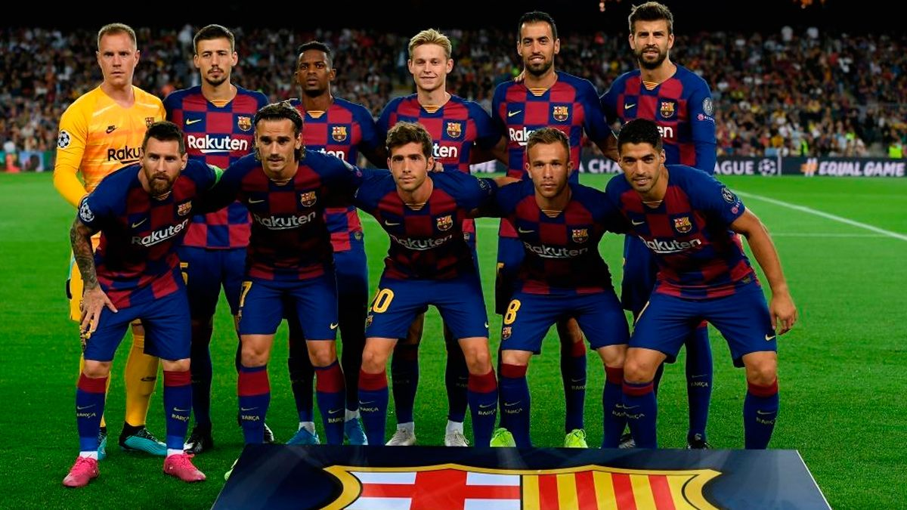
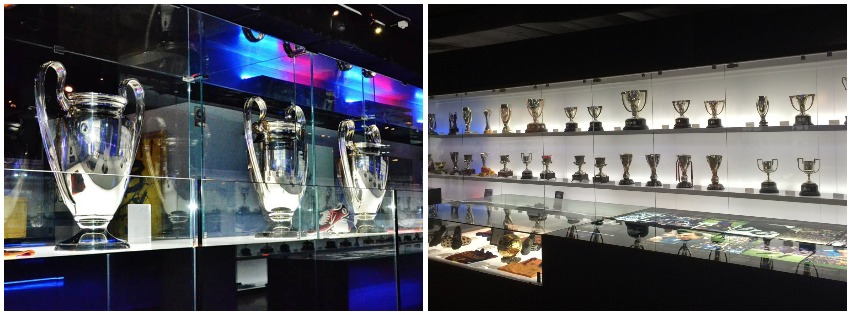

About Futbol Club Barcelona
Futbol Club Barcelona, commonly referred to as Barcelona and colloquially known as Barça, is a Spanish professional football club based in Barcelona, Catalonia, Spain.
Founded in 1899 by a group of Swiss, Spanish, English, and Catalan footballers led by Joan Gamper, the club has become a symbol of Catalan culture and Catalanism, hence the motto "Més que un club" ("More than a club"). Unlike many other football clubs, the supporters own and operate Barcelona. It is the fourth-most valuable sports team in the world, worth $4.06 billion, and the world's richest football club in terms of revenue, with an annual turnover of €840,8 million. The official Barcelona anthem is the "Cant del Barça", written by Jaume Picas and Josep Maria Espinàs.
Barca's Tropies
Barcelona is one of three founding members of the Primera División that have never been relegated from the top division since its inception in 1929, along with Athletic Bilbao and Real Madrid. In 2009, Barcelona became the first Spanish club to win the continental treble consisting of La Liga, Copa del Rey, and the UEFA Champions League, and also became the first Spanish football club to win six out of six competitions in a single year, by also winning the Spanish Super Cup, UEFA Super Cup, and FIFA Club World Cup. In 2011, the club became European champions again and won five trophies. This Barcelona team, which won 14 trophies in just 4 years under Pep Guardiola, is considered by some in the sport to be the greatest team of all time. By winning their fifth Champions League trophy on 6 June 2015, Barcelona became the first European club in history to achieve the continental treble twice. The highest paid sports team in the world, in November 2018 Barcelona became the first sports team with average first-team pay in excess of £10m ($13.8m) per year.
Domestically, Barcelona has won a record 74 trophies: 26 La Liga, 30 Copa del Rey, 13 Supercopa de España, 3 Copa Eva Duarte, and 2 Copa de la Liga trophies, as well as being the record holder for the latter four competitions. In international club football, the club has won 20 European and worldwide titles: 5 UEFA Champions League titles, a record 4 UEFA Cup Winners' Cup, a joint record 5 UEFA Super Cup, a record 3 Inter-Cities Fairs Cup, and 3 FIFA Club World Cup.[5] Barcelona was ranked first in the International Federation of Football History & Statistics Club World Ranking for 1997, 2009, 2011, 2012, and 2015 and currently occupies the second position on the UEFA club rankings. The club has a long-standing rivalry with Real Madrid; matches between the two teams are referred to as El Clásico. More about FC Barcelona trophies in our Honourssection.
Legends
Barcelona is one of the most widely supported teams in the world, and the club has one of the largest social media following in the world among sports teams. Barcelona players have won a record number of Ballon d'Or awards (12), with recipients including Johan Cruyff, as well as a record number of FIFA World Player of the Year awards (7), with winners including Ronaldo, Romário, Ronaldinho, and Rivaldo. In 2010, three players who came through the club's youth academy (Lionel Messi, Andrés Iniesta, and Xavi) were chosen as the three best players in the world in the FIFA Ballon d'Or awards, an unprecedented feat for players from the same football school. Additionally, players representing the club have won a record number (8) of European Golden Shoe awards. See more Barca Legends here.
La Masia

La Masia de Can Planes, usually shortened to La Masia ( In English: "The Farmhouse"), is a term used for FC Barcelona's youth academy. The academy includes more than 300 young players. It has been a significant factor in Barcelona's European success, and produced some world class players in the early 2000s.
In 2010, La Masia became the first youth academy to have trained all three finalists for the Ballon d'Or in a single year - Andrés Iniesta, Lionel Messi and Xavi.
La Masia is also the name of FC Barcelona's football training facilities, originally located near the Camp Nou in the Les Corts district of Barcelona. The original building itself was an ancient country residence (In Catalan: masia) built in 1702, and once Camp Nou was inaugurated in 1957, the building was remodelled and extended for use as the club's social headquarters. With the gradual expansion of the club, the building became too small for headquarters, and on 20 October 1979, La Masia was converted into a dormitory for young players from outside Barcelona. On 30 June 2011, the Masia building ceased housing the academy players. In a simple ceremony, the doors were closed and the Ciutat Esportiva Joan Gamper took over the function of the residential center for the players.
MESSI

The Story of THE GOAT
Leo Messi's footballing career started in 1995 at Newell's Old Boys, where he played until the year 2000. At the age of 13, Lionel Messi crossed the Atlantic to try his luck in Barcelona, and joined the Under 14s. Messi made spectacular progress at each of the different age levels, climbing through the ranks to Barça C, followed by Barça B and the first team in record time.
In the 2003-2004 season, when he was still only 16, Messi made his first team debut in a friendly with Porto that marked the opening of the new Do Dragao stadium.
The following championship-winning season, Messi made his first appearance in an official match on October 16, 2004, in Barcelona's derby win against Espanyol at the Olympic Stadium (0-1). With several first team players seriously injured, the services of several reserve team players were called upon, and Messi became a regular feature of Barça squads.
His breakthrough came in the 2005-06 season, starting with an amazing performance in the Joan Gamper Trophy match against Juventus. He was also outstanding at the Santiago Bernabéu, in Barcelona's unforgettable 3-0 win, and also at Stamford Bridge, in the Champions League match against Chelsea. Injury kept him sidelined for much of the latter stage of the season, but Messi still played a total of 17 league games, 6 in the Champions League and 2 in the Copa del Rey, and scored eight goals.
In the 2008/09 season, and now without Ronaldinho alongside him, Messi became the main star of the Barça squad that claimed the treble and he scored in the Copa del Rey and Champions League finals. He also scored the goal against Estudiantes that won Barça their first Club World Cup.
Messi, as in Rome, played a vital role in the Champions League final at Wembley in 2011 were scored a scorcher from outside the area to put his team ahead.
The season 2011/12 saw Messi again key as Barça claimed the Spanish Super Cup, the UEFA Super Cup, the FIFA Club World Cup and the Copa del Rey. The following season the striker was once more vital as the blaugranes claimed the league title with 100 points.
In 2014/15 his 56 goals in all competitions laid the foundation for a second treble in the Club’s history. In 2018 Messi become captain, taking over from the departed Andrés Iniesta. The league title in 2019 saw the Argentine become the most decorated footballer in FC Barcelona history with 34 trophies to his name.
On an individual level Messi has continually broken records throughout his career. In 2005 he became the youngest player ever to score in the league for Barça, a record now held by Ansu Fati. In 2011/12 Messi moved past César Rodríguez's record of 232 official goals to become the Club's all-time top goalscorer. He ended 2012 with the record number of goals in a calendar year (91), thus beating the historic tally established by Gerd Müller (85 for Bayern Munich and Germany in 1972).
The following year, 2013/14 Messi reached yet another landmark, overtaking Paulino Alcántara’s total of 369 goals to become the leading goalscorer of all time at the Club
The 2014/2015 season was one of the Argentine star's most brilliant. First, in a game against Sevilla at Camp Nou Messi surpassed Telmo Zarra's 251 career goals to become the all-time leading scorer in league history. Messi also passed Raúl's 71 career goals to become the all-time leading scorer in Champions League history. The Argentinian also surpassed Luis Figo's all-time La Liga assist record (105).
Messi’s individual achievements are also unprecedented: six Ballon d’Or awards, six times Champions League top scorer, six times Golden Shoe winner, six times ‘Pichichi’ (top scorer) in La Liga, Ballon d’Or winner at the 2014 World Cup, FIFA World Player of the Year in 2009 and FIFA The Best winner in 2019.
Messi is also captain of the Argentina national side and has played in four World Cups (2006, 2010, 2014, 2018), losing in the final in 2014 in Brazil against Germany. He has also played in five Copa Américas (2007, 2011, 2015, 2016 and 2019), losing in the final in both 2015 and 2016 to Chile on penalties. In the summer of 2008 he also played at the Beijing Olympics, and came home with a gold medal.
The sixth Ballon D'Or
Messi performed wonderfully in the 2018/2019 season, when he scored 51 goals in 49 games, as well as assisting 19 others. His ridiculous 70 goals contribution earned him his sixth Ballon d'Or, as well as the nickname 'MESSIX'.